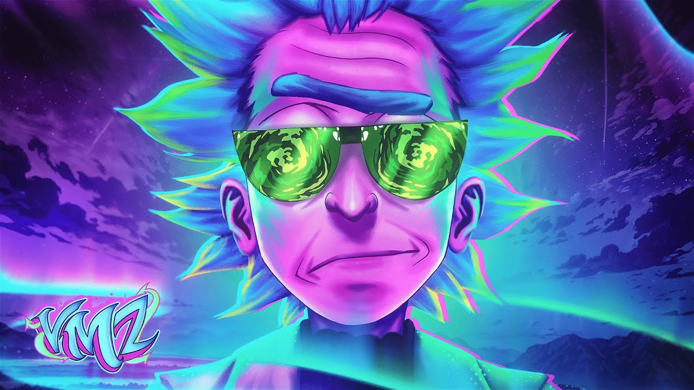

Insuficiência Cósmica
VMZ
Produtor
Marck
Vaguei o universo
A procura de entender
Mas descobri que o tempo
No final vai me vencer
Mais que toda verdade
Que eu pudesse ocultar
Não existe um lugar
Onde eu possa me encaixar
Aurora boreal, o cosmo é tão bonito
Complexo e real, mergulho o infinito
Me parece normal viver assim sozinho
Interdimensional, o vácuo é tão frio
É que eu me sinto tão Sanchez
Sozinho vagando pelo universo
Mais do que constante
Solitário em busca de algo
Que me faça ser um gigante
Incógnita mais perfeita
Pra encontrar variante
É o mesmo de antes
Me sinto tão Sanchez
Sozinho vagando pelo universo
Mais do que constante
Solitário em busca de algo
Que me faça ser um gigante
Incógnita mais perfeita
Pra encontrar variante
É o mesmo de antes
E se eu ao menos me lembrar
Quando um pequeno sentimento me influenciar
O homem que tem tudo é o mesmo sem nada
Portando a imensidão sem poder segurá-la
Me sinto tão Sanchez
Me sinto tão Sanchez
Distante de tudo que eles me falaram
Nunca me pediram nem me perguntaram
Sou mais um rebelde vagando no espaço
Porque não fiz aquilo que me mandaram
Eu jamais nasci pra ser um comandado
Da insegurança, um subordinado
Nunca me verão reagir como fraco
Eu nasci com asas e nem sou um pássaro
A realidade vai pesar
E sem te consultar
Será seu pesadelo
Pois se soubesse da verdade
Que nada importa mesmo
Lá no fundo isso seria o seu maior medo
Insuficiência e nem a ciência
Poderia explicar o que te traz bondade
Sendo que até agora viveu em essência
Procurando um motivo de felicidade
A inteligência vira karma no futuro
Dói quando você entende o porquê de tudo
Eu me tornei aquele que transforma o próprio mundo
E não importa mais se ele anda tão injusto
Me dê um tempo pra pensar
Eu preciso sair
Preciso viajar
Pra bem longe daqui
O homem das estrelas
E os seus cálculos
O homem que navega
Em seu próprio barco
Incógnita mais perfeita
Pra encontrar variante
É o mesmo de antes
E se eu ao menos me lembrar
Quando um pequeno sentimento me influenciar
O homem que tem tudo é o mesmo sem nada
Portando a imensidão sem poder segurá-la
Me sinto tão Sanchez
Me sinto tão Sanchez